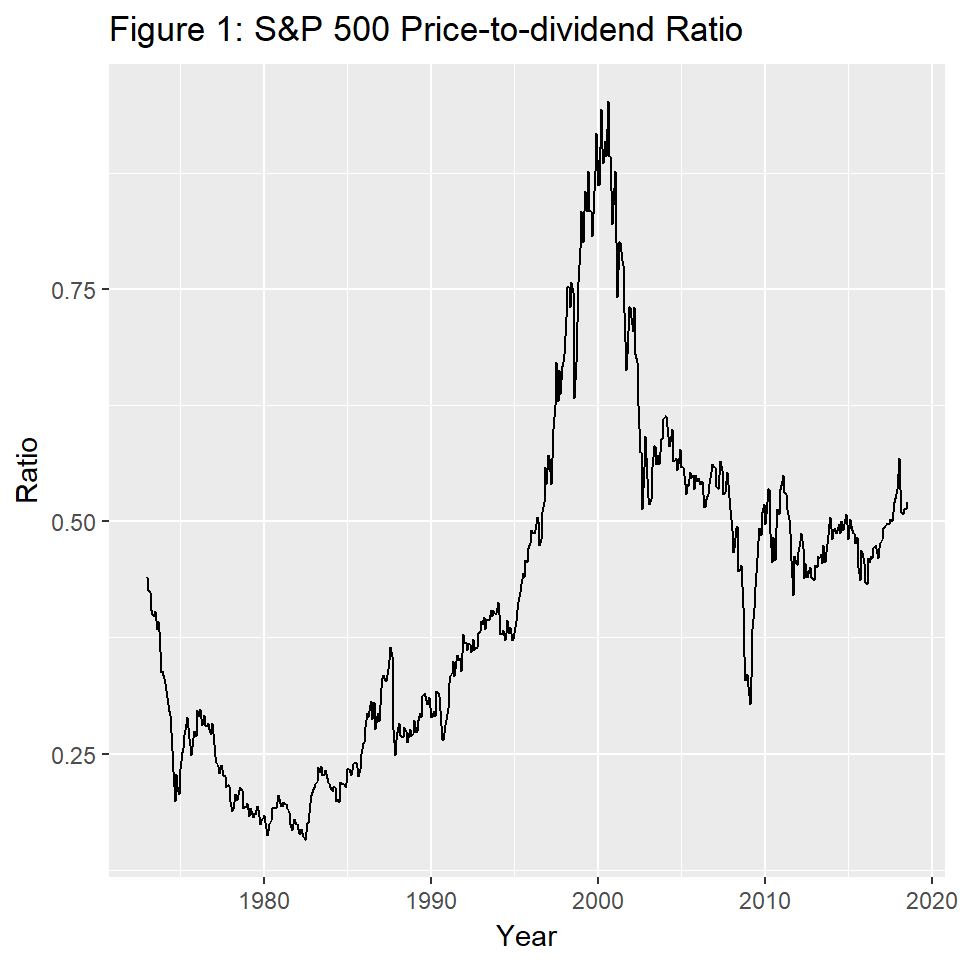

Real-Time Monitoring of Bubbles: S&P 500
Peter C. B. Phillips
Yale UniversityShuping Shi
Macquarie UniversityItamar Caspi
Bank of Israel and Bar-Illan UniversityOctober, 2018
Source:vignettes/illustrationSNP.Rmd
illustrationSNP.RmdAbstract
In this tutorial we illustrate the effectiveness of the PSY procedure in detecting bubbles with an applications to the S&P 500 financial market using R and the psymonitor package.Before beginning the tutorial, make sure that you have all the necessary packages. Try running the cell below and, if any issues arise, follow the instructions within.
knitr::opts_chunk$set(echo = TRUE, warning = FALSE,
message = FALSE, comment = NA)
# CRAN Packages
# -------------
# If any of these packages are not installed, write
# install.packages("<name of package>")
# e.g., install.packages("MultipleBubbles")
library(psymonitor) # For testting for bubble monitoring
library(ggfortify) # For time-series plotsThe S&P 500 stock market has been a central focus of attention in global financial markets due to the size of this market and its impact on other financial markets. As an illustration of the methods discussed in this chapter, we conduct a pseudo real-time monitoring exercise for bubbles and crises in this market with the PSY strategy. The sample period runs from January 1973 to July 2018, downloaded monthly from Datastream International. The price-dividend ratio is computed as the inverse of dividend yields. The first step is to import the data to R, using the following code:
In the presence of a speculative bubble, asset prices characteristically deviate in an explosive way from fundamentals, representing exuberance in the speculative behavior driving the market. In the present case, this deviation implies that the log price-dividend ratio is expected to follow an explosive process over the expansive phase of the bubble. But during crisis periods, the price-dividend ratio is expected to follow a random (downward) drift martingale process, in contrast to a small (local to zero) constant drift martingale process that typically applies under normal market conditions. According to the theory detailed in Section 3 and 4, we expect to witness rejection of the null hypothesis in the PSY test empirical outcomes during both bubble and crisis periods.
Figure 1 plots the price-to-dividend ratio of the S&P 500 index. We observe a dramatic increase in the data series in the late 1990s, followed by a rapid fall in the early 2000s. The market experienced another episode of slump in late 2008.

With a training period of 47 observations, we start the pseudo real-time monitoring exercise from November 1976 onwards. The PSY test statistics are compared with the 95% bootstrapped critical value. The empirical size is controlled over a two-year period, i.e., by taking \(Tb = 24\). The lag order is selected by BIC with a maximum lag order of 6, applied to each subsample. The PSY statistic sequence and the corresponding bootstrap critical values can be calculated as follows in R:
First, we set the seed for reproducibility of the results:
Next, we define the series and parameters that are used as inputs for the test procedure:
y <- pd
obs <- length(y)
r0 <- 0.01 + 1.8/sqrt(obs)
swindow0 <- floor(r0*obs)
dim <- obs - swindow0 + 1
IC <- 2
adflag <- 6
yr <- 2
Tb <- 12*yr + swindow0 - 1Finally, we run the test
The identified origination and termination dates can be calculated and viewed with the following commands:
date <- date[swindow0:t]
Q_PSY <- Q_SPSY %*% matrix(1, nrow = 1, ncol = dim)
ind95 <- (bsadf > t(Q_PSY[2, ])) * 1
OT <- locate(ind95, date)
disp(OT)The identified periods are shaded in green in Figure 2. As is evident in the figure, the procedure detects two bubble episode and one crisis episode. The first bubble episode only lasts for three months (1986M05-M06 and 1987M08) and occurred before the Black Monday crash on October 1987. The second bubble episode is the well-known dot-com bubble, starting from January 1996 and terminating in October 2000 (with several breaks in between). For the dot-com bubble episode the identified starting date for market exuberance occurs well before the speech of the former chairman of the Federal Reserve Bank Alan Greenspan in December 1996 where the now famous question `how do we know when irrational exuberance has unduly escalated asset values’ was posed to the audience and financial world. The identified subprime mortgage crisis starts in October 2008, which is one month after the collapse of Lehman Brothers, and terminates in February 2009.
The codes for generating the plot and shaded overlays in the figure are as follows:
Figure 2: Bubble and crisis periods in the S&P 500 stock market. The solid line is the price-to-dividend ratio and the shaded areas are the periods where the PSY statistic exceeds its 95% bootstrapped critical value.
Example 2: Credit Risk in the European Sovereign Sector
The European sovereign debt sector experienced an extremely turbulent period over the last decade, which caused significant harm to the real economy (Acharya et al., 2018) and led to an unprecedented level of unemployment (Karafolas and Alexandrakis, 2015). The PSY detection algorithm can serve as a useful early warning mechanism for escalating credit risk, which is acknowledged as a leading indicator of financial and economic crises, and thereby enable timely policy action and effective risk management to avert more serious economic damage. To show the potential efficacy of this early warning system, we conduct a pseudo monitoring exercise of credit risk in the European sovereign sector.
Credit risk in the European sovereign sector is proxied by an index constructed as a GDP weighted 10-year government bond yield of the PIIGS (Portugal, Ireland, Italy, Greece, and Spain) countries.5 The PSY strategy is applied to the spread between the PIIGS bond yield index and the 10-year government bond yield of Germany (used as a proxy for a prevailing benchmark of economic fundamentals). The sample data runs from June 1997 to June 2016 and was downloaded from Datastream International. The GDP data are downloaded quarterly and converted to a monthly frequency by assuming a constant value within each quarter.
Figure 3 plots the bond yield spread over the sample period. The bond yield index experienced a rapid and substantial rise between 2008-2009. It continued to mount to historical highs from 2010 onwards and peaked in June 2012. The bond yield index has dropped since then and becomes relatively stable over the last two years. The codes for implementing the PSY procedure are identical to those for Example 1. The estimated start and end dates of the crisis episodes are displayed below.

The shaded areas in Figure 3 are the identified periods of crisis obtained using the 95% bootstrap critical values. The first alarm signal of risk appeared in March 2008 and lasts for one month. The alarm was triggered again after the collapse of Lehman Brothers in October 2008 and turns off in March 2009. The stress indicator switched on again in May 2010 and lasted until August 2012.
Figure 3: Crisis episodes in the European sovereign sector. The solid line is the 10-year government bond yield spread between the PIIGS countries and Germany and the shaded areas are the periods where the PSY statistic exceeds its 95% bootstrap critical value.
References
- Phillips, P. C. B., Shi, S., & Yu, J. (2015a). Testing for multiple bubbles: Historical episodes of exuberance and collapse in the S&P 500. International Economic Review, 56(4), 1034–1078.
- Phillips, P. C. B., Shi, S., & Yu, J. (2015b). Testing for multiple bubbles: Limit Theory for Real-Time Detectors. International Economic Review, 56(4), 1079–1134.
- Phillips, P. C. B., & Shi, S.(2017). Detecting financial collapse and ballooning sovereign risk. Cowles Foundation Discussion Paper No. 2110.